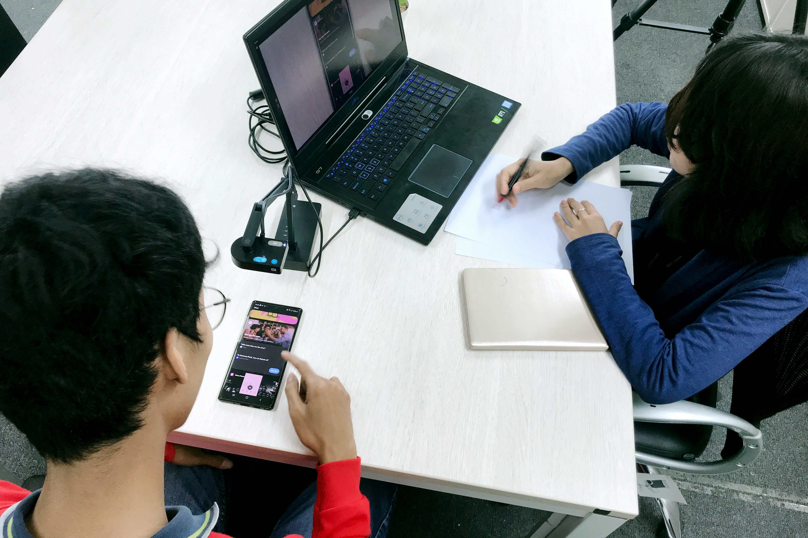
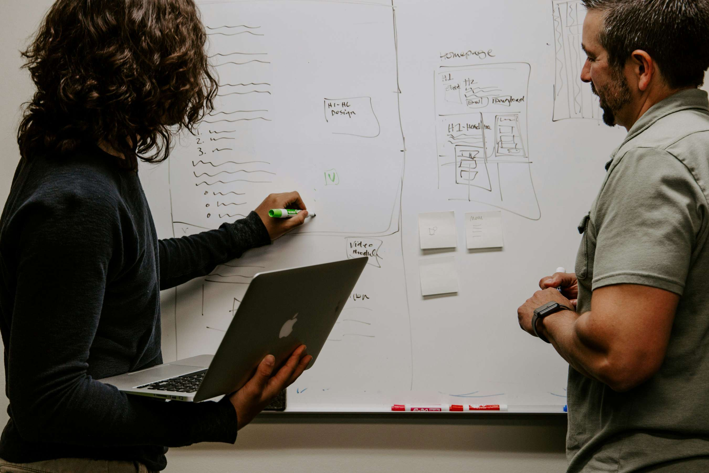
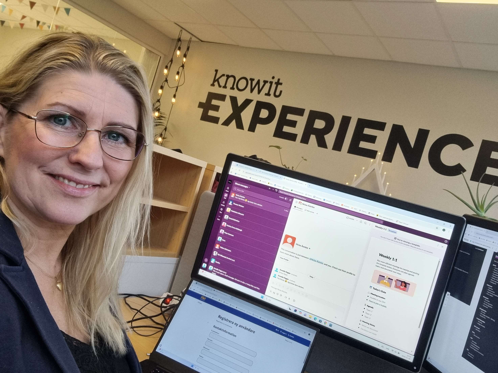
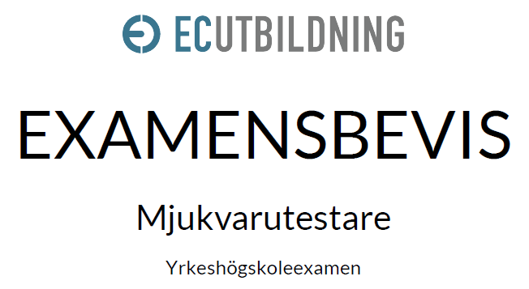

Software Tester & QA Portfolio
Från verksamhetskonsulent till QA
Den här sidan är en portfolio från min YH-utbildning till Mjukvarutestare
Verksamhetskonsult & QA
Med 17 års erfarenhet som verksamhetskonsulent med daglig användning av affärskritiska system bygger jag en naturlig bro mellan verksamhet och kod:
- Verksamhetsförståelse: Djup vana vid boknings-, fakturerings- och administrationsflöden.
- Användarfokus: Identifierar logiska brister och användarrisker tidigt i utvecklingscykeln.
EC Utbildning (400 YHP)
Examen som Mjukvarutestare (400 YHP) med högsta betyg (VG) i alla delkurser:
- Automation & CI/CD: Playwright, Selenium och GitHub Actions i praktiska projekt.
- Examensarbete: Principer för stabil testautomation med semantisk HTML och robusta locatorer.
Kärnkompetenser
Testmetodik
Praktisk tillämpning av strukturerad testmetodik från planering och testdesign till träffsäker buggrapportering i ReQtest.
Testautomation
Utveckling av robust testautomation med Playwright och Selenium i TypeScript och Java, BDD/TDD med Cucumber samt automatiserade CI/CD-flöden i GitHub Actions.
Icke-funktionella tester
Kvalitetssäkring av icke-funktionella krav med fokus på prestanda, tillgänglighet och säkerhet genom benchmarking och API-tester i Postman
Delkurser, projekt och LIA
Kurs 1: Introduktion till mjukvarutestning
Jag utvecklar teoretiska och praktiska färdigheter inom hela testprocessen, från att skriva testfall till buggrapporter samt att använda AI som stöd i testarbetet.
Kurs 2: Introduktion till programmering
Kursen har gett mig praktiska och teoretiska programmeringskunskaper anpassade för mjukvarutestare, med fokus på källkod, felrättning, versionshantering och enhetstester.
Kurs 3: Praktiskt projektarbete inom mjukvarutestning
Genom praktiskt agilt projektarbete har jag utvecklat mig inom testmetodik, kommunikation och hantering av testsviter och buggar i ReQtest och Figma.
Kurs 4: Testautomatisering och programmering
Kursen har fördjupat kompetensen inom programmering, testautomatisering och CI/CD genom att praktiskt bygga TDD/BDD-baserade tester med Selenium, Cucumber, GitHub Actions och AI.

Kurs 5: Icke funktionella tester
Kursen ger praktisk och teoretisk förståelse för icke-funktionella tester inom prestanda, säkerhet, tillgänglighet och benchmarking.

Kurs 6: Teststrategier, testdesign, tekniker och exekvering av test
Grupparbetet ökade kompetensen inom agil testmetodik, teststrategier och testdesign – från planering och val av testtekniker till skriptad och utforskande exekvering, bugghantering samt tillämpning av AI-verktyg.
Kurs 7: Examensarbete - Principer för stabil testautomatisering
Examensarbetet undersöker hur testvänlig, semantisk HTML och genomtänkta locator-strategier minskar underhållskostnader och skapar robusta automatiserade tester i dynamiska webbmiljöer.

Kurs 8: LIA, Testautomation på Knowit
LIA-praktik som mjukvarutestare på Knowit Experience med fokus på att bygga Playwright-ramverk i TypeScript, automatisera smoke och regressionstester samt konfigurera CI i GitHub Actions med AI-stöd.
Teknisk verktygslåda
Examensbevis
Mjukvarutestare, Betyg VG (Högsta möjliga)
EC Utbildning, 400 YHP
Fullständig yrkeshögskoleexamen med inriktning mot testautomation, agil kvalitetssäkring och manuell testmetodik.

Öppna examensbevis (PDF)Låt oss samarbeta
Söker ni en noggrann mjukvarutestare till ert team? Tveka inte att höra av er!
Kontakta mig